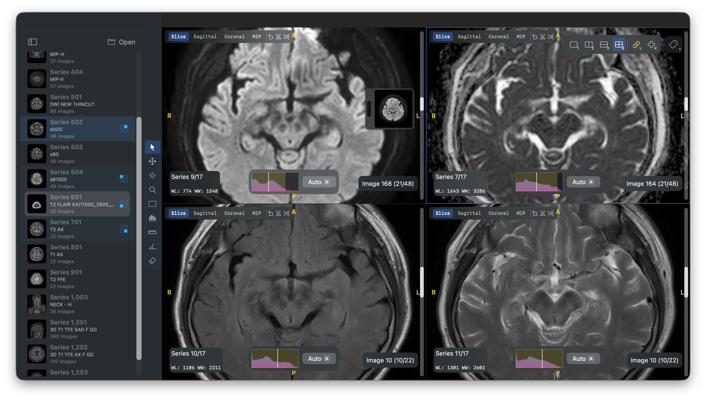
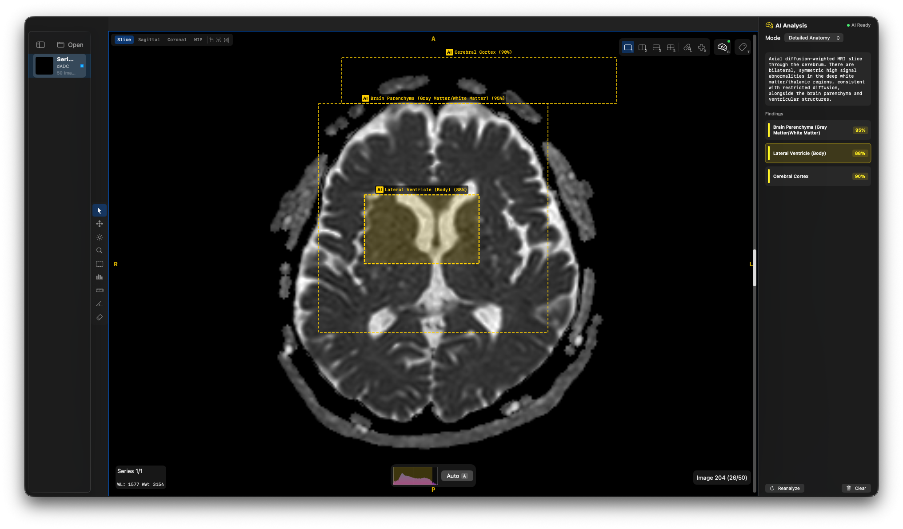

Open Source · MIT License
OpenDicomViewer-Annotate
AI-powered DICOM annotation on your Mac.
Fully local. Fully private.
Powered by Gemma 4 E4B running on Apple Silicon via MLX.
Requires macOS 14.0+ (Sonoma) · Apple Silicon · 16GB+ RAM recommended

